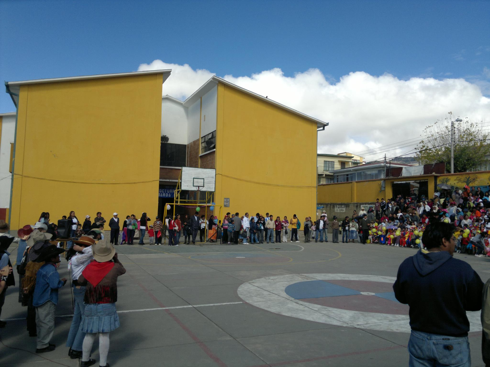

HIMNO AL COLEGIO 6 DE JUNIO "A"
Letra: Prof. Angel Escobar
"6 de junio", tus aulas sagradas
Vas forjando constante el saber
Al calor de tus grandes anhelos
De la patria el gran porvenir. (bis)
Juventud, juventud arrogante
De Bolivia Altiva el honor
Levantando tu vuelo sereno
Hacia el mar nuestra gran Heredad
CORO
Y tus sienes de lauros orladas
Oh! colegio de gran corazón
Son tu escudo de acero brillante
Son tu fuerza, tu temple y valor.

MISIÓN INSTITUCIONAL
Desarrollar un proyecto educativo de calidad adecuado a las necesidades reales de nuestros destinatarios y nuestro contexto.
Desarrollar en nuestros destinatarios una educación integral, críticos, reflexivos, propositivos, innovadores, investigadores, comprometidos con la democracia, según la normativa vigente del país, que promueva su realización personal trascendente y la transformación de la sociedad.
VISIÓN INSTITUCIONAL
La Unidad Educativa 6 de Junio “A”, como visión tiene presente lograr ser un referente educativo en la comunidad, y a nivel nacional, porque facilita la realización personal de sus destinatarios y su integración digna en la vida social, económica, cultural y religiosa, contribuyendo a una sociedad más justa, segura y feliz.
OBJETIVOS ESTRATÉGICOS
Desarrollar integralmente a los estudiantes y demas miembros de la comunidad educativa, con prácticas crítico-reflexivas y productivas aplicado al Modelo Educativo Sociocomunitario Productivo, propiciando la producción de conocimientos diversos que satisfagan las necesidades de la comunidad interna y externa, fortaleciendo capacidades humanísticas, tecnológicas y científicas, en una infraestructura y un clima instirucional adecuado entre sus agentes educativos para el vivir bien.